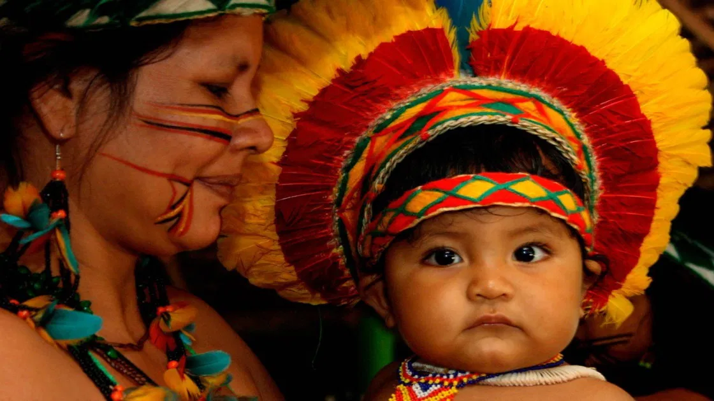

Conta-se que os Wayana saíram para caçar e observaram um grande grupo de Tamakós (espíritos) que comiam frutinhas. Eles voltaram no dia seguinte e havia um número ainda maior de espíritos. Então flecharam o menor Tamakó do grupo e um dos adultos comeu um dos índios, sendo os demais seguidos pelo bando até a aldeia. Para estabelecer a paz, o pajé prometeu aos Tamakós em uma canção, que estes não seriam mais flechados pela tribo. Como agradecimento, os Tamakós prometeram os proteger e, desde então, é realizada a Festa da Cumeeira, onde os Wayana vestem-se como Tamakós
Trata-se de um ritual de iniciação, em que a menina é colocada em um "quarto de isolamento". Passado esse tempo, acontece o ritual, quando a menina é enfeitada com colares cruzados sobre os seios e tem a cabeça preparada para a retirada dos cabelos com o uso de uma cera preparada com formigas (uma espécie de anestésico natural). Ao sair do quarto, o tio retira-lhe a primeira mecha de cabelo, enquanto os homens da tribo dançam em torno do local do isolamento usando as máscaras confeccionadas de entrecasca, uma fibra natural, cuja representação varia entre animais e demônios.
Utilizadas pelos Waujá, povo que habita a bacia do rio Xingu, no Mato Grosso, nas festas do apapaatai - espírito causador de doenças. Para promover a cura nos casos mais graves, é necessária a organização de uma festa, que exige o preparo de vários objetos nos rituais, dentre os quais as máscaras. Esta festa se constitui em uma aliança entre o humano adoentado e o espírito causador. Na crença Waujá, o apapaatai, ávido por comida e festa, ao receber a homenagem do doente, promoverá a cura e o protegerá de outros ataques de diferentes espíritos. As máscaras devem ser guardadas até que se desintegrem ou que a hora do ritual de destruição da máscara chegue.
A arte plumária indígena brasileira é uma expressão cultural marcante, composta por objetos feitos com penas de aves, usados como adornos no corpo, tanto em contextos cotidianos quanto rituais. Essa arte, que chamou a atenção dos europeus desde o século XVI, era vista como um troféu da conquista e como uma curiosidade exótica. Com o tempo, passou a ser reconhecida como uma linguagem visual complexa e significativa, representando as culturas indígenas. No entanto, a aculturação e a comercialização de seus produtos turísticos ameaçam preservar sua riqueza e significado, colocando em risco a continuidade dessa tradição essencial para a identidade indígena.
A arte plumária indígena brasileira é uma expressão cultural ancestral que utiliza penas de aves para criar adornos, usados tanto em rituais quanto no cotidiano. Representa uma forma de comunicação, refletindo ritos de passagem, identidade e prestígio. Presentes em diversas etnias como Kayapó, Karajá e Xavante, essas peças variam em técnicas, materiais e formas. A arte é frequentemente associada a rituais, onde a plumagem transforma a aparência de quem a usa. Tradicionalmente, é uma atividade dos homens, que envolve caça, preparação das penas e fixação por amarração ou resina. Embora tenha uma base folclórica, a arte plumária é uma criação única que transmite a identidade e os valores dos povos indígenas.
